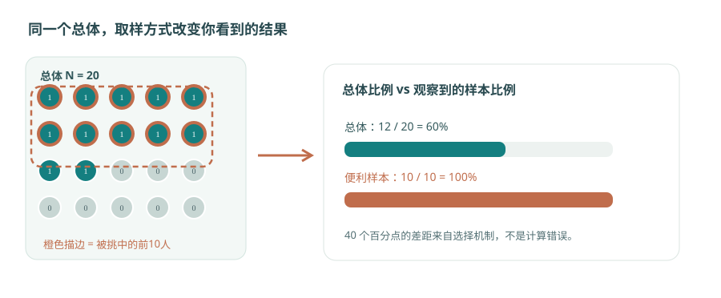
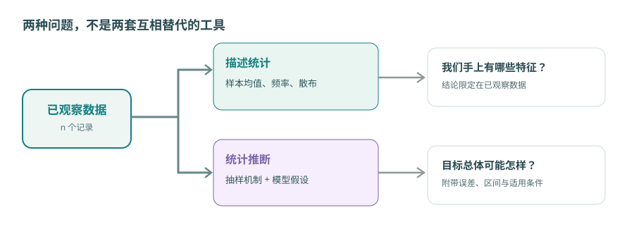

什么是统计学：从样本观察到总体判断
你只采访了少数人，却想了解整个群体。统计学研究的不是如何把这一步变得“看起来准确”，而是哪些结论能成立、要付出怎样的不确定性代价。
01 · 为什么平均值不能直接代表所有人
9 ÷ 12 = 75% 是完全正确的算术，但正确的算术不自动产生正确的总体结论。我们需要先区分三个对象：想研究的人、实际接触到的人、完成回答的人。
如果这 12 人恰好都在工作日下午被访问，那么他们可能与晚上来店的顾客不同；如果不满意者更倾向于拒绝问卷，已回答者又与被邀请者不同。对于这 12 位受访者，“9 人满意”是可以核对的描述；对于所有顾客，“75% 满意”则需要说明抽样框、响应机制和分析假设。
第一条核心界限
样本内的事实和对总体的推断是两种不同力度的主张。样本越大通常有助于降低随机波动，但无法自动消除选择偏差或测量偏差。
02 · 总体、样本与观测单位
总体（population）是研究问题规定的全部单位，可以是“今年这家店全部有过购买的顾客”；总体不是“世界上所有人”。观测单位（unit）通常是一位顾客、一笔交易或一次测量。样本（sample）是实际纳入分析的一组观测单位。变量（variable）则是每个单位被记录的特征，例如满意与否、等待时间或消费金额。

上图不代表真实调查，也不说明所有便利抽样都会如此极端。它只是证明：仅凭样本比例本身，无法判断样本是否代表总体。由于总体的 20 个值被有意排列，挑选顺序甚至能够制造看似完美的“支持率”。
总体参数
由总体定义决定的量，例如总体满意比例 p。通常未知，调查的目标往往是了解它。
样本统计量
从实际样本计算的量，例如样本满意比例 p̂。它是观察结果，不等同于总体参数。
03 · 描述和推断到底有什么不同

描述统计（descriptive）
对这 12 位受访者：9 人满意、3 人不满意、样本满意比例 75%。无论样本是否有代表性，这个描述都可以成立（前提是测量准确）。
推断统计（inferential）
对所有目标顾客：可能的满意比例是多少？误差有多大？如果未来重抽一次样本，结果会怎样变化？这些需要额外假设。
实验中的随机分配（random assignment）与调查中的随机抽样（random sampling）也不是一回事：前者有助于比较处理效果并减少已分配组之间的系统差异；后者主要涉及样本能否代表定义好的总体。一个实验可以随机分配参与者，却仍只来自某类志愿者。
04 · 从计数到比例：统计量与参数
用二元变量记录每个人是否满意：满意记为 1，不满意记为 0。对于 12 人的样本，9 个 1 和 3 个 0，其样本比例为：
一般地，若第 i 个样本单位的二元结果记为 x_i ∈ {0,1}，样本比例也等于二元数据的样本均值：
符号 n 是样本人数，xᵢ 是第 i 人的观察值，p̂ 是从数据得出的统计量；p 表示目标总体的真实比例。若样本是在合适的概率抽样设计下获得，我们才可能进一步讨论估计的性质及其不确定性。
05 · 误差与偏差来自哪里
- 抽样波动：即使使用恰当的随机抽样，每次抽到的人不同，样本比例也会变化。
- 覆盖偏差：抽样框中没有覆盖到某些目标单位，例如只调查使用某款 App 的顾客。
- 无应答偏差：未答者与已答者在关注的结果上存在差异。
- 测量偏差：问题措辞、问卷环境、记录规则系统性影响回答。
不能简单地把“样本量足够大”当作解决方案：随机误差随设计与样本量变化，系统偏差则可能长期存在。报告一组数据时，应明确目标总体、获取方法、缺失机制、测量定义。
06 · 亲手验证与自我检查
下面的交互仅修改 12 位已访问者中“满意”的人数。它能改变样本描述，但无论滑块怎么移动，都没有提供总体抽样机制：
样本比例计算器
样本满意率：75.0%
只要没有额外的代表性证据，这仍是对 12 份回答的描述。
你也可以使用一个可重复的极简例子观察选择偏差（这里的排列与样本选择完全由人构造）：
population = [1] * 12 + [0] * 8 # 20 人，12 个 1
convenience = population[:10] # 恰好取排序前 10 人
print(sum(population) / len(population)) # 0.6
print(sum(convenience) / len(convenience)) # 1.0自我检查
问题：你调查了 100 位网站用户，其中 80 人支持某功能。可以直接说“80% 的潜在客户支持”吗？
参考答案：不能。只能直接描述这 100 位被调查网站用户；要推广到“潜在客户”，必须先界定目标群体、确认覆盖范围和参与机制，评估可能的偏差。
参考资料与延伸阅读
- OpenIntro Statistics：第 1 章的数据基础、抽样和实验设计。
- OpenIntro / Introduction to data：观测单位、变量与抽样结构。
- OpenStax, Introductory Statistics：总体、样本、统计量与参数的入门定义。
本文所有 12 人、20 人数据均为合成教学例子，不是实地调查证据。